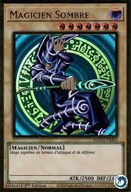
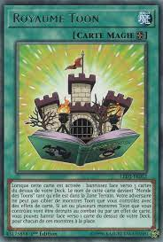
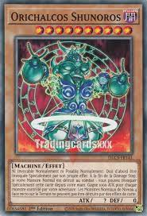
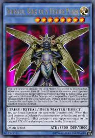
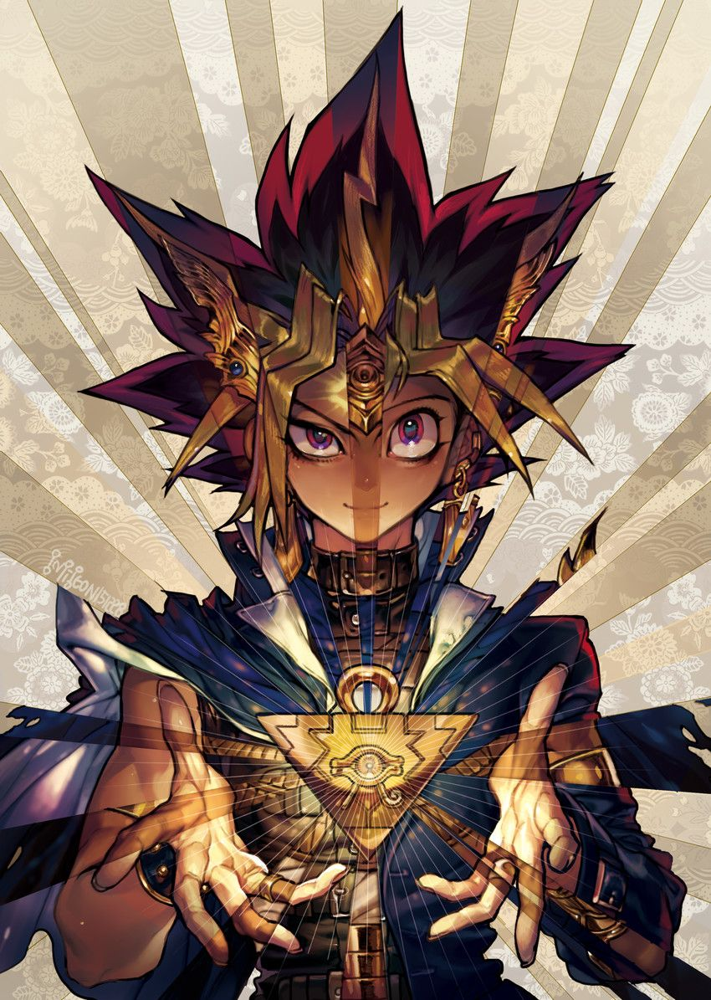
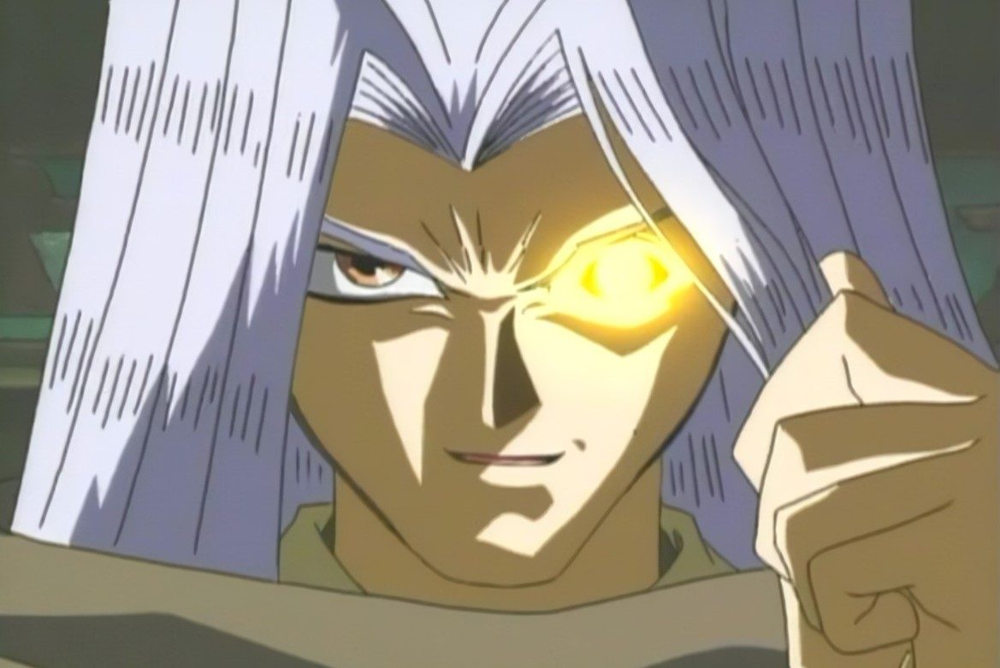
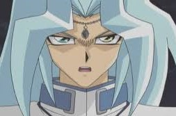
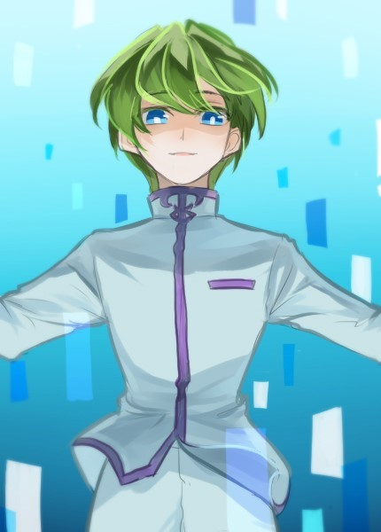

Versus
Yugi Moto
Yugi représente un défi constant que Kaiba est déterminé à surmonter. En tant que PDG de Kaiba Corporation, il a une fierté immense et considère son talent en duel comme une extension de sa supériorité intellectuelle. Yugi, avec son alter ego Yami Yugi, devient une cible privilégiée, car il est l'un des rares duellistes capables de rivaliser avec lui.
Dark magicien
Yugi et son magicien sombre forment une alliance indissoluble, chaque duel devenant une démonstration éclatante de leur synchronicité. Ce lien particulier transcende le monde des cartes, symbolisant la force intérieure de Yugi et son engagement inébranlable envers l'amitié et la justice.
Pegasus
En tant que PDG ambitieux de Kaiba Corporation, voit Pegasus, le créateur du jeu "Duel Monsters", comme un obstacle à surmonter pour atteindre la suprématie dans le duel. Pegasus, de son côté, est souvent dépeint comme manipulateur et intriguant, jouant un rôle clé dans les événements du Duel Kingdom. Leur relation est marquée par des duels stratégiques et des confrontations tendues, reflétant les enjeux élevés de la compétition dans cet univers.
Toon world
"Le Monde des Toons" joue un rôle central dans les duels de Pegasus et reflète son style unique de jeu et son côté fantasque. Les créatures Toon, introduites avec cette carte, sont caractérisées par leur apparence animée et leur capacité à attaquer directement le joueur adverse sans passer par les monstres sur le terrain.
Dartz
Dartz, le principal antagoniste de l'arc "La Grande Crise des Orichalques", cherche à utiliser la magie des Orichalques pour purifier le monde en éliminant l'égoïsme humain. Kaiba, en tant que duelliste déterminé et pragmatique, s'oppose à Dartz, considérant ses plans comme une menace à la liberté individuelle.
Orichalcos
"Orichalcos Shunoros" pour Dartz est un symbole de son désir de remodeler le monde et de restaurer l'harmonie. L'utilisation de "Orichalcos Shunoros" est un élément central dans sa tentative de redéfinir la réalité selon sa vision idéalisée.
Noah
Noah, cherchant à isoler Seto et sa sœur Mokuba, les piège dans un monde virtuel. Kaiba, intrépide et résolu, doit non seulement survivre dans cet environnement numérique hostile mais aussi affronter les démons de son passé. Leur relation complexe est explorée à travers des duels virtuels et des révélations sur leur histoire familiale, mettant en lumière les conflits et les émotions profondes entre les deux frères.
Shinato
"Shinato, Roi de la Fusion" est liée à la quête de Noah pour surmonter sa condition virtuelle et revenir à la réalité. Symbole de son désir profond de transcender les barrières entre le monde virtuel et le monde réel. "Shinato, Roi de la Fusion" est le symbole de son aspiration à retrouver son existence physique.
Yugi Yami
Yugi représente un défi constant que Kaiba est déterminé à surmonter. Kaiba considère son talent en duel comme une extension de sa supériorité. Yugi, avec son alter ego Yami Yugi, devient une cible privilégiée, car il est l'un des rares duellistes capables de rivaliser.
Pegasus
Kaiba voit Pegasus, le créateur du jeu "Duel Monsters", comme un obstacle à surmonter pour atteindre la suprématie dans le duel. Leur relation est marquée par des duels stratégiques et des confrontations tendues, reflétant les enjeux élevés de la compétition dans cet univers.
Dartz
Dartz, cherche à utiliser la magie des Orichalques pour purifier le monde en éliminant l'égoïsme humain. Kaiba, en tant que duelliste déterminé et pragmatique, s'oppose à Dartz, considérant ses plans comme une menace à la liberté individuelle.
Noah
Noah, cherchant à isoler Seto et sa sœur Mokuba, les piège dans un monde virtuel. Kaiba, doit affronter les démons de son passé. Leur relation complexe met en lumière les conflits et les émotions profondes entre les deux frères.
